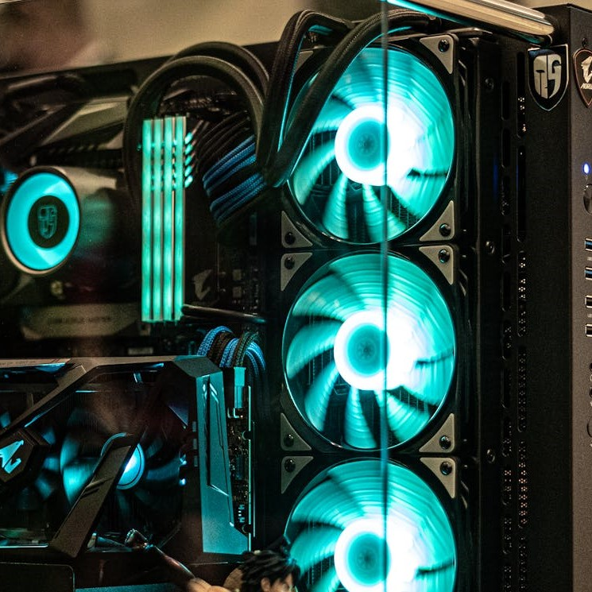

<!DOCTYPE html>
<html lang="en"></html>
<head>
    <meta charset="UTF-8">
    <meta name="viewport" content="width=device-width, initial-scale=1.0">
    <title>Document</title>
    <link rel="stylesheet" href="style2.css">
</head>
<body>
    
  <div id="wrapper">

        <header>

          <a href="index.html"> 
            <button type="button" class="block">  
              
            </button>
          </a>

        </header>
        <nav>
        <h2>

            <div class="dropdown">
              <button class="dropbtn">Meny</button>
              <div class="dropdown-content">
                <a href="chassi.html">Chassi</a>
                <a href="cpu.html">CPU</a>
                <a href="grafikkort.html">Grafikkort</a>
                <a href="hårddisk.html">Hårddisk</a>
                <a href="moderkort.html">Moderkort</a>
                <a href="nätaggregat.html">Nätaggregat</a>
                <a href="ram-minne.html">Ram Minne</a>
              </div>
            </div>

            <div class="dropdown">
              <button class="dropbtn2">Mycket skit</button>
              <div class="dropdown-content">
                Mycket för syns skull
              </div>
            </div>

            <div class="dropdown">
              <button class="dropbtn3">Mer skit</button>
              <div class="dropdown-content">
                Mer för syns skull
              </div>
            </div>

            <div class="dropdown">
              <button class="dropbtn4">Mest skit</button>
              <div class="dropdown-content">
                Mest för syns skull
              </div>
            </div>

         </h2>
        </nav>  
        <aside></aside>
        <main>
          <h2>
Det här är en dator. Datorn används dagligen av nästan hela sverige, men hur fungerar datorn? Vilka komponenter
består den av? Det är för mig att besvara!
<p>
Hela samhället är byggt av datorer. Våran information sparas på hårddiskar, vi kollar på film på datorn. Vi gör
nästan allting på datorn mu för tiden. När datorn kom accelerade människans utveckling enormt och det ser inte
ut att sluta snart. Det är bäst att veta vad som finns i datorn, vad som är viktigt att tänka på och hur den
fungerar.
</p>
<p>
För att se till att datorn mår bra och inte går sönder finns det några saker att tänla på. Man ska se till att
den inte får något tillskått eller underskott av energi. Du ska därför inte rycka ur elkabeln innan datorn är
avstängd. En till bra sak att veta är att man kan använda jordmattor. Den är till för att du inte ska kunna ge
din dator en stöt. Jordmattor kopplar dig med marken så du inte har någon över- eller underskotts energi i dig.
Om man håller på med datorer och ömtåliga elektroniska manicker är det viktigt att hålla sig elektriskt neutral.

</p>
         </h2>
      </main>
        <footer></footer>
        
  </div>
    
</body>
</html>